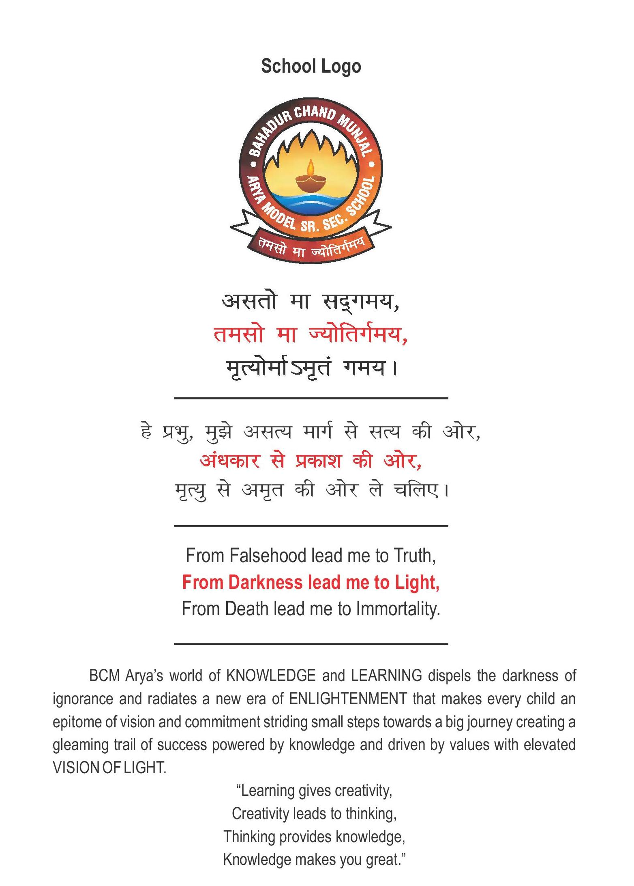
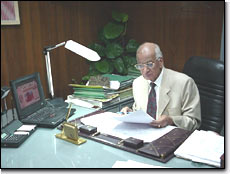

SCHOOL NAME
BCM ARYA MODEL SENIOR SECONDARY SCHOOL
SCHOOL LOGO
School Philosophy
When was Arya Samaj founded
Arya Samaj was founded in 1875 at Bombay, India, by Maharishi Dayanand Saraswati.
The pioneers of Arya Samaj are: .
⦿Swami Dayanand Saraswati Ji (Founder of Arya Samaj)
⦿Swami Shradhanand Ji (Founder of Gurukul Kangri University, Hardwar)
⦿Mahatma Hans Raj Ji (Founder of D.A.V. Institutions)
⦿Acharya Ram Dev Ji (Founder of Kanya Gurukul Dehradun, U.P.)
⦿Pandit Guru Dutt Ji Vidyarthi (Emminent Vedic Scholar)
⦿Lala Lajpat Rai Ji (Freedom Fighter and Leader)
Purpose of Arya Samaj
Arya Samaj was founded in the pre-independence era of India. The purpose was to move the Hindu Dharma away from all the factitious beliefs, and go back to the teachings of Vedas.
Goal of Arya Samaj
The goal of the Arya Samaj has always been, Krinvanto Vishvam Aryam - Make This World Noble. Principles of Arya Samaj Arya Samaj is based on the basic teachings of Vedas. These teachings are summarized in following 10 basic principles.
1-God is the ultimate source of all true knowledge and of the objects that are known through his means.
2-God is existence, intelligence and bliss. He is formless, almighty, just merciful, unborn infinite, unchangeable, beginning less, incomparable, the support and lord of all pervading omniscient, imperishable, immortal, exempt from fear, eternal, holy and maker of the universe.
3-The Vedas are books of the true knowledge. It is the paramount duty of all Aryans to read them and to teach them, to hear them and to read them to others.
4-We should always be ready to accept truth and renounce untruth.
5-All actions should be done in conformity with Dharma, after due consideration of right and wrong.
6-The primary aim of Arya samaj is to do good to all mankind i.e. promote their physical, spiritual and social welfare.
7-We should treat all people with affection, justice and regard to their merits.
8-We should aim at dispelling ignorance and promote knowledge.
9-No one should remain satisfied with his own welfare. He should regard his welfare to life in welfare to all.
10-In matters, which affect the well being of all, a person should give a subordinate place to his personal likings. In matters, which affect him alone, he is to enjoy freedom of action.
About Our Late President
Shri Satyanand ji is an institution by himself and a Rajarishi in the spirit of the word. Born on 24th May’1917 at Kamalia, District Lyallpur (now in West Pakistan). He had his early schooling in traditional Gurukul pattern. He has been an outstanding follower of the path shown by Maharishi Dayanand ji, and at the young age of 17 years he won an Award for his sincerity and devotion to Arya Samaj at Queta City – Capital of Baluchistan in Pakistan. Shri Satyanand ji is the eldest in the Munjal brothers now in business, and he was the first from the family to be in business. He not only nurtured what has now emerged possibly fastest growing enterprise in Northern India, i.e. Hero Group having annual Turnover of more than Rs. 5200 Crores, but has also been instrumental in inculcating the values for which the group is known for; integrity with fierce desires for achievement and leadership. Shri Satynand ji has not limited himself to business only. He has a very wide interest including education, masses health and Arya Samaj. He has been instrumental in creating and nurturing the schools and college, all listed in this website, at Ludhiana, Very recently, on behalf of Arya Samaj Model Town, he has started a Gurukul of Girls which embodies best of both the traditional Gurukul approach mingled with modern education of science and computer – a breakthrough experiment. All these institutions occupy a prominent position in the city of Ludhiana. He is also involved in Dayanand Medical College & Hospital being a Member of the Governing Board. This spirit of serving the humanity through education and health is not limited to Ludhiana only, but has been extended at Dharuhera (Haryana) where the Hero Group runs a School, Hospital and Vocational Institute.He has been pioneer in setting up more than 10 Arya Samaj within Ludhiana and many more within Punjab and elsewhere. Many of them new Arya Samaj are located in difficult, remote and socially backward and hilly areas including Garhwal region in U.P. State. On being asked how could he achieved this, he remarked, “People have a way of becoming what you encourage them to be”. He has been instrumental in building a team of dedicated Arya Samaj volunteers. “What is your greatest achievement ?” you ask him, reply would be, “being instrumental in getting the birth place of Maharishi Daynand handed over to Tankara Trust”. This is some thing which has eluded the Aryans for a long and could happen only because of his hard work and enthusiasm. For his great contribution to the services of Arya Samaj, Swami Sarvanand Ji recognised him as Mahatama at Dina Nagar convention. He has been associated with Arya Samaj in various capacities, being the Vice President of Sarvadeshik Arya Pratinidhi Sabha, Vice President of Arya Pradeshik Pratinidhi Sabha. He has also been closely associated with D.A.V. Management Committee as its Vice President. He has been associated with Arya Samaj Model Town, Ludhiana for the last 40 years, earlier as a Secretary and now as President. He does not preach, he practices by himself whatever he wants others to pursue. For, he believes that the tough thing about learning self discipline is that we need self discipline in order to learn it and his outine of daily Havan Yagna, Ved Path and study of religious books is most essential in his whole family. His wife - Smt. Pushpa Wati Munjal who hails from an Arya Samajist family, has been a great source of strength and inspiration for all that he has been able to accomplish. People can be divided in three classes, immovable; those that are movable and those that move. Shri Satyanand ji not only move, but move the multitudes around him through his humility; honesty and integrity embibed in deep rooted Aryan values.